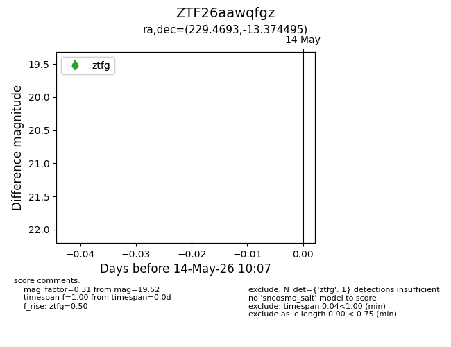
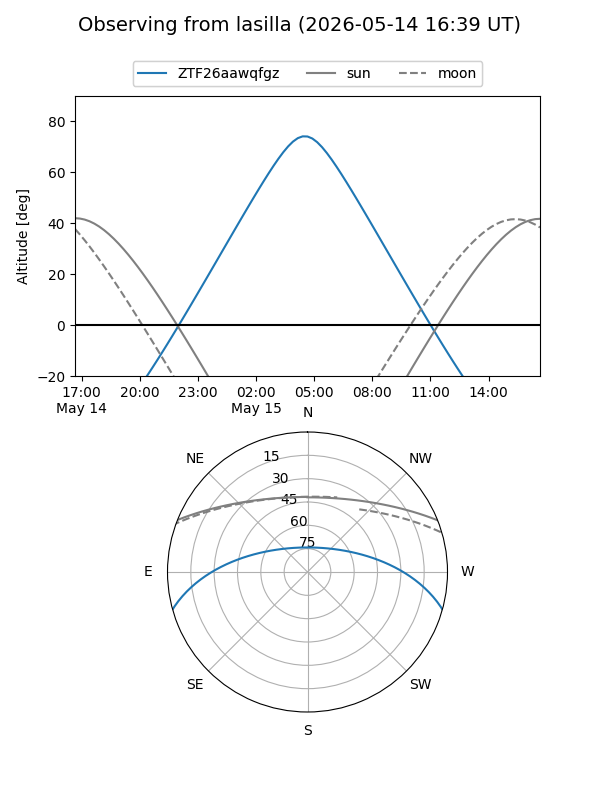
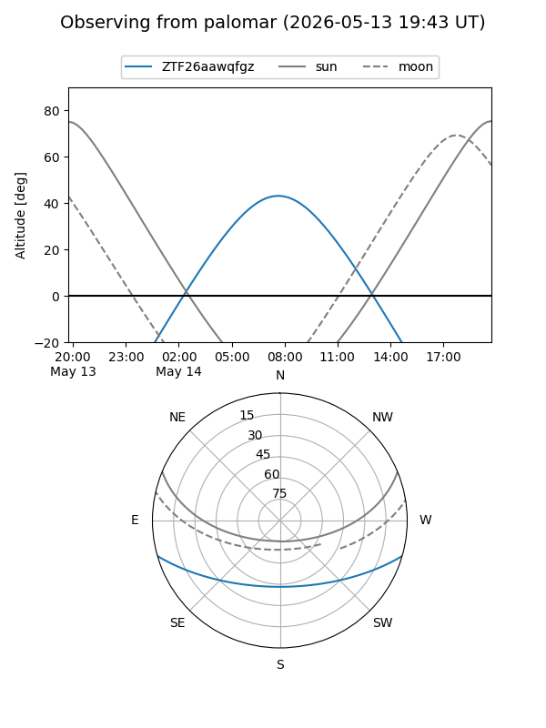

ZTF26aawqfgz
Target ZTF26aawqfgz at 2026-05-14 10:08
Aliases and brokers:
FINK: link
Lasair: link
ALeRCE: link
alt names
ZTF26aawqfgz (ztf,fink_ztf)
Coordinates:
equatorial (ra, dec) = 229.4693,-13.37449
equatorial (HMS+DMS) = 15:17:52.63,-13:22:28.18
galactic (l, b) = (348.8460,+36.12550)
Flags:
Photometry:
last ztfg=19.52
1 ztfg detections
Lightcurve

Visibility


Additional plots